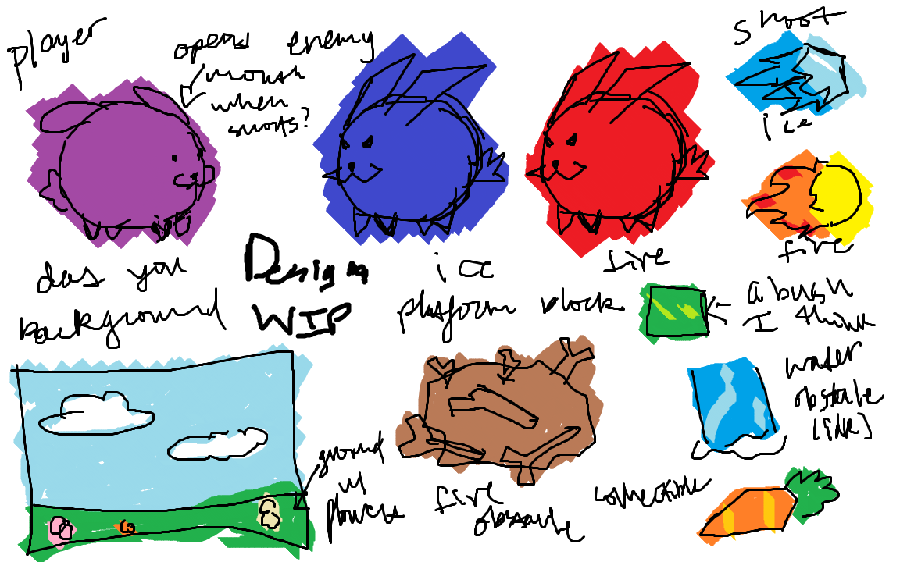
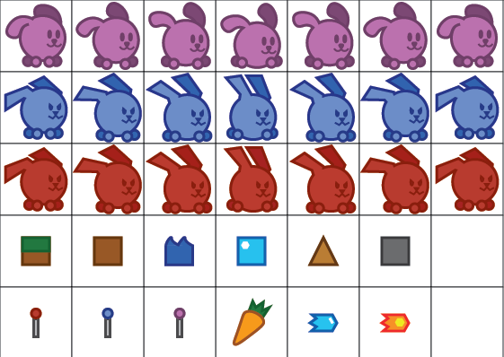
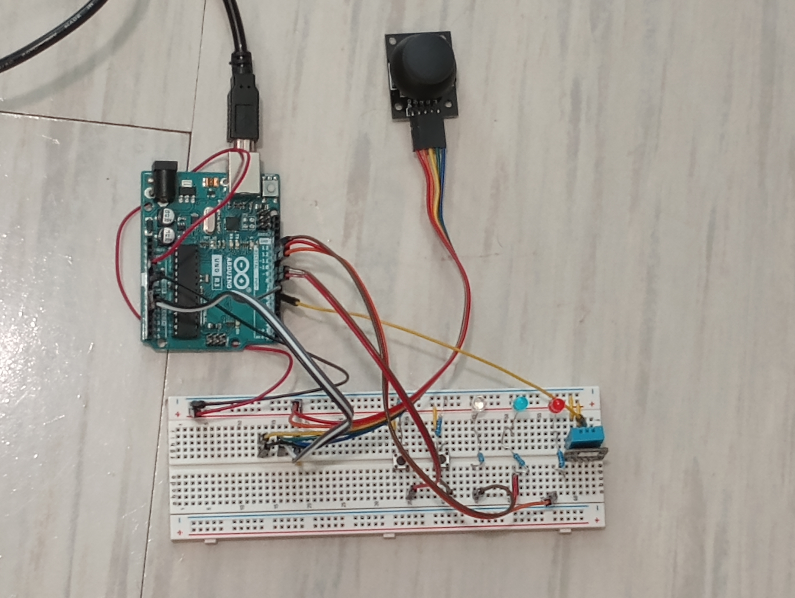

As the month of April began, so too did my journey to create my CSC2463 final project. It started with a proposal of what my project would consist of in terms of graphics, sound, and physical computing. I immediately knew I wanted to make a game, so I created a plan for a simple platforming game, with tunes synthesized in real time for each state of gameplay. The character which would traverse these platforms would be controlled by a joystick, and bullets would be shot by pressing a button. A red and blue led would indicate whether the player currently has fire or ice powers respectively. To use a special move that would allow one obstacle to be safe to walk on, another button would be pressed. Finally, a temperature sensor would be used to sense the temperature of its surroundings. If the temperature is over 80 deg F, the player will utilize fire powers, while a temperature under that threshold would grant ice powers. The player can manipulate this to their liking with things like a hair dryer, ice, a fan, etc. Once I got the thumbs up from one of my professors, I got to work.
I started with the creation of the sprites first because that seemed like the most fun part. I drew an extremely rough sketch in MSPaint of all the. I would not blame anyone for looking at my rough draft and thinking that this game was already doomed, but one must trust the process. I proceeded to craft refined versions of my ideas in Adobe Illustrator, made .png files of each asset I needed, and put them into my assets folder. I took the time to learn about tiles so I wouldn't have to put each block in the place I wanted it to be by hand inputing each coordinate. Once I got a hold of my tile map designs, coding my game became way easier. It wasn't easy as there was a lot to code, but it was still enjoyable nonetheless.
 Admittedly, this part of the project is relatively simple. I started playing notes in an online piano simulator until I found some tunes that were suitable for each of my four game states. I wrote down the sequence of notes for each song, made them into sequences using tone.js, and had these songs play during their respective game states.
Wiring my breadboard and Arduino properly was not too difficult. I referred to wiring diagrams whenever I was unsure how to wire something (looking at you, DHT 11 sensor!). Coding my Arduino was not too difficult, either. The only new thing I was coding for was the temperature sensor, but once I took a look at the documentation, I was pleasently surprised by how easy it was to gather data from. The real trouble stemmed from connecting my Arduino to p5.js and p5play. I followed the protocol I learned in class to make these two things communicate, yet it didn't work. I even referred to the documentation of the p5.webSerial library to no avail. This conundrum stumped me for a long while until I figured out that section of code was in the wrong place. It's always the little things that cause the most trouble.
And so my journey finally ends. I am satisfied with the fruits of my labor, yet there are still some things I would have like to improve. The enemy and player sprites aren't as smooth as I'd like them to be, I couldn't get some sound effects to work, and the temperature sensor controlled part of gameplay is, in its current state, really clunky (it is not easy to control your character while running a hair dryer). However, despite these issues, I had a fun time creating my final project and am proud of what I made.
Want to play what I made? Check out this link to play with an arduino wired up like the image above. Click this link to play the game completely controlled with the use of a keyboard.